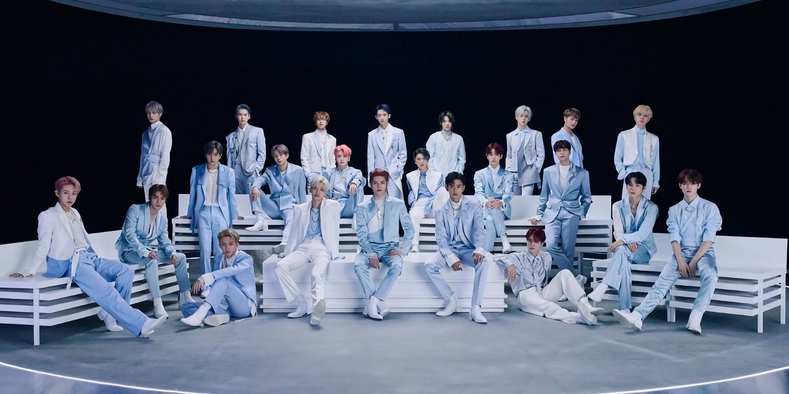
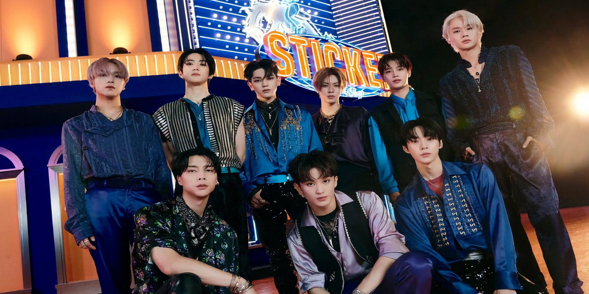
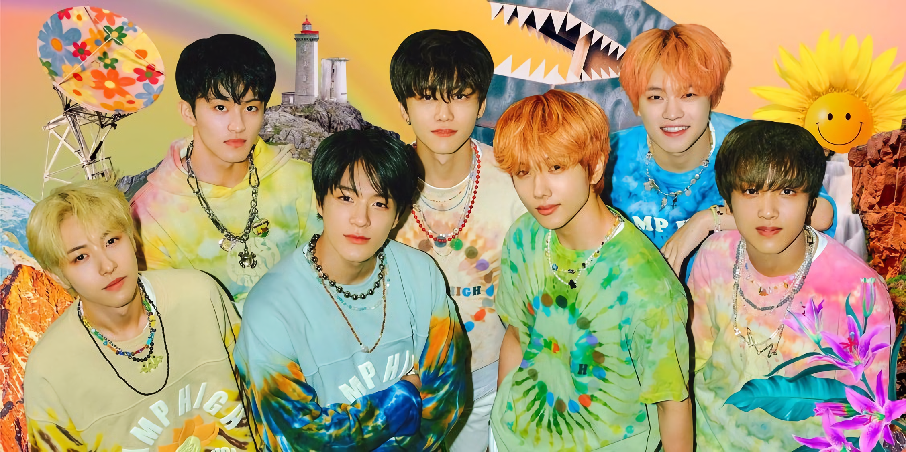
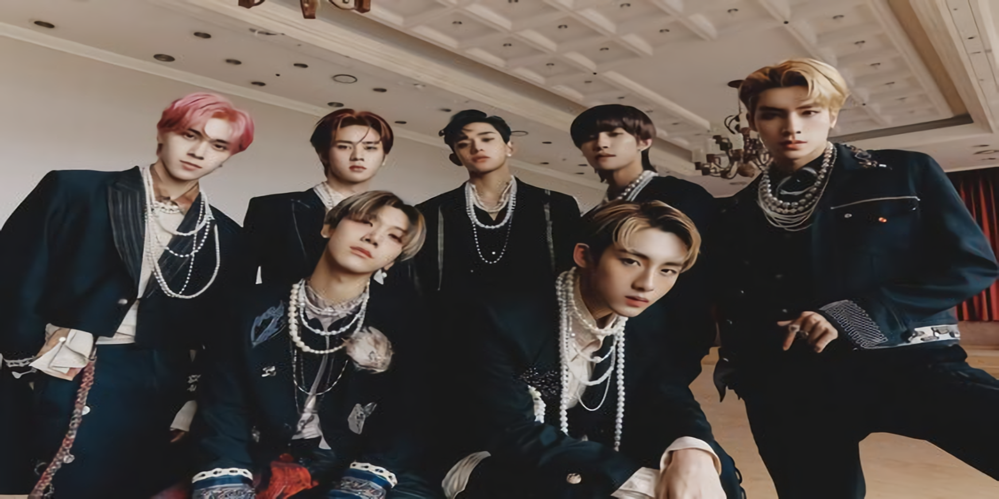

About

NCT (Hangul: 엔시티, singkatan dari Neo Culture Technology) adalah sebuah boy group asal Korea Selatan yang dibentuk oleh SM Entertainment.Grup boyband ini terbagi menjadi beberapa sub-unit yaitu, NCT 127, NCT Dream, dan WayV. Sejak diumumkan pembentukannya pada tahun 2016, grup ini telah berkembang hingga mencapai total 23 anggota yang tergabung dalam tiga sub-unit berbeda.
Saat pertama kali dibentuk pada 2016, NCT beranggotakan 21 member yaitu Taeil, Johnny, Taeyong, Yuta, Kun, Doyoung, Ten, Jaehyun, Winwin, Jungwoo, Lucas, Mark, Renjun, Jeno, Haechan, Jaemin, Chenle, Jisung, Xiao Jun, Yang Yang, dan Hendery.
Pada September 2020, NCT menambah 2 orang anggota baru yaitu Shotaro dan Sungchan, sehingga kini jumlah seluruh personel NCT menjadi 23 orang.
Unit pertama, NCT 127, yang berbasis di Seoul, memulai debut pada 7 Juli 2016 dengan album mini NCT#127. Unit kedua, NCT Dream, memulai debut pada 25 Agustus 2016 dengan singel digital Chewing Gum. Unit ketiga, WayV, berbasis di Tiongkok, debut pada 17 Januari 2019 dengan album singel The Vision.
NCT 127

NCT 127 (Hangul: 엔시티 127) adalah sub-unit pertama dari grup vokal pria Korea Selatan NCT yang dibentuk oleh SM Entertainment.
NCT 127 memulai debut dengan Fire Truck pada Juli 2016, dengan hanya 7 member yaitu Taeyong, Taeil, Yuta, Jaehyun, Winwin, Mark, dan Haechan. Doyoung dan Johnny kemudian bergabung ke NCT 127 pada 27 Desember 2016. Lalu Jungwoo bergabung pada 17 September 2018.
NCT Dream

NCT Dream adalah sub-unit kedua dari boy band asal Korea Selatan, NCT, yang khusus beranggotakan remaja dengan usia belasan tahun.
NCT Dream memulai debut mereka pada Agustus 2016 dengan single digital Chewing Gum. Grup ini terdiri dari 7 member yaitu Mark, Haechan, Renjun, Jeno, Jaemin, Chenle, dan Jisung.
WayV

WayV (Hanzi: 威神V) adalah grup vokal pria asal Tiongkok yang merupakan sub-unit ketiga dan unit yang berbasis di Tiongkok dari NCT dan dikelola oleh sub-label Tiongkok SM Entertainment, Label V.
Pada Januari 2019, WayV merilis “The Vision”, dan pada Mei 2019 mereka kembali merilis mini album pertama yang bertajuk “Take Off”. Grup ini terdiri dari 7 member yaitu Winwin, Kun, Ten, Lucas, Yangyang, Xiaojun, dan Hendery.